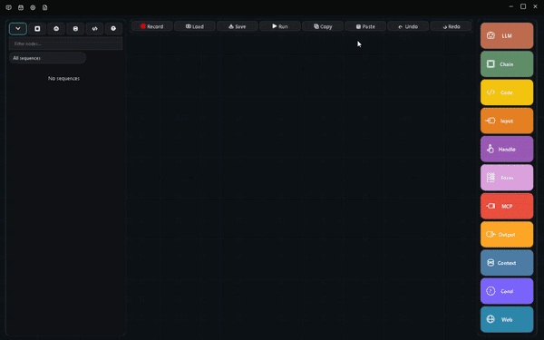
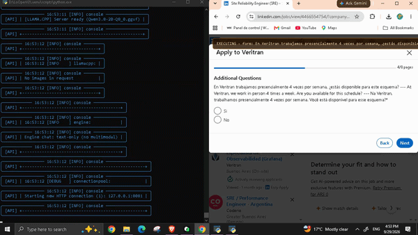

Don't rent your agent. Own it.
Arrow is not a cloud service that meters your every move. Record any interaction once, compose it into a visual workflow graph, and run it deterministically — with local AI, local vision, local OCR, and local speech. No cloud. No telemetry. No per-token fees.
How it works
Three steps from idea to running agent.
Record
Capture a desktop sequence or browser flow once. Arrow grabs screenshots and UI elements along the way.

Compose
Connect nodes into a visual chain. Branch, loop, and nest. Add LLM, vision, OCR, and code nodes where they help.

Run
Execute deterministically with element-first grounding. Approvals and memory are just nodes you wire in.

Frontier-model capability, without the frontier model
Arrow gets more out of small local models through orchestration, grounding, and self-improvement — not raw compute.
Who it's for
From solo power users to enterprise automation teams.
Business process automation
Finance, HR, and ops teams building auditable, on-premise automation.
QA & testing engineers
Test agents that adapt to UI changes while staying deterministic.
IT operations
Maintenance and monitoring workflows with AI-driven decisions, locally.
AI enthusiasts
Neuro-symbolic agents powered by local models — no cloud, no fees.
Power users
Automate personal workflows with agents that keep your data on-device.
RPA developers
Visual validation, AI reasoning, and secure sandboxing in one tool.
Automation that stays on your machine.
Build your first Arrow agent — no cloud, no telemetry, no per-token fees.